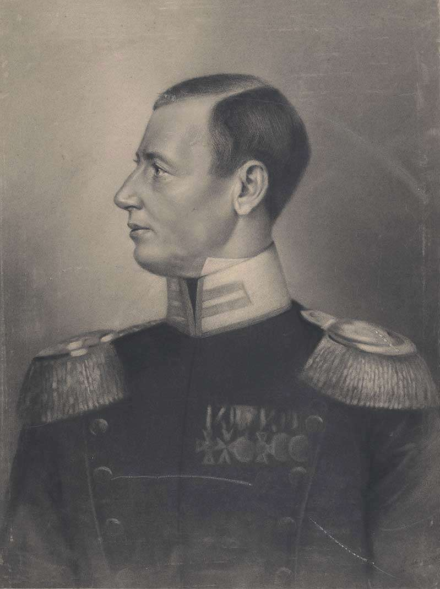

1812년 나폴레옹을 기다리는 러시아군의 내부사정 (마지막편)
게시: 2019-11-18T06:30:34+09:00
그런데 놀랍게도 러시아군은 아무 것도 하지 않고 있었습니다. 병사들은 네만 강을 따라 늘어선 여러 마을에 분산되어 숙영 중이었는데, 주로 사열과 분열 같은 제식 훈련만 죽어라고 했습니다. 장교들은 자기들끼리 무도회와 파티를 벌이며 시골 아가씨들과의 연애 모험에 뛰어들었습니다. 당시 짜르 알렉산드르를 따라 빌나에 와있던 국무부 장관 쉬시코프(Aleksandr Semyonovich Shishkov)는 이런 기록을 남겼습니다. "마치 적군이 수천 km 먼 곳에 떨어져 있기라도 한 것처럼, 우리의 일상은 너무나도 근심걱정이 없는 듯 했다. 심지어 적군에 대한 아무런 소식도 들어오지 않았다." 적군에 대한 소식은 커녕 아군인 러시아군으로부터도 아무 뉴스가 없었습니다. 러시아군이 정말 아무 것도 안 하고 있었기 때문입니다. 적의 배치와 이동에 대한 정보를 알아낼 노력도, 전쟁 발발시 어디로 진격해올지에 대한 예측 노력도 없었습니다. 러시아군은 자기들이 주둔 중이던 그 일대 리투아니아 지역의 지도조차 가지고 있지 않았습니다. 이렇게 아무런 전략도 계획도 없을 뿐만 아니라 긴 네만 강을 따라 뿔뿔이 분산 배치된 러시아군으로서는 만약 당장 내일이라도 프랑스군이 어느 한 곳에 집결하여 도하를 한다면 속수무책으로 돌파당하는 수 밖에 없었습니다. 러시아군이 이런 무기력 상태에 빠지게 된 가장 큰 원인은 바로 짜르 알렉산드르의 결정 장애와 오지랍이었습니다. 총사령관을 임명하지도 않고, 공격인지 수비인지도 분명히 하지 않고, 부하들에게 일임하는 것도 아닌데 그렇다고 자기가 책임을 지는 것도 아닌 정말 어정쩡한 그의 태도 때문에 러시아군은 방향성을 잃고 뭘 어찌해야 할 지 갈피를 못잡고 있었습니다. 가장 활발했던 것은 그를 둘러싸고 있던 많은 참모 장교들이었습니다. 사실 그런 참모들이야말로 뭐 하나 제대로 아는 것도 없고 책임지는 것도 없이 그저 번쩍번쩍 화려한 군복만 차려 입은 군더더기에 불과했습니다. 그러나 그런 사람들일 수록 자신의 가치를 입증하기 위해서 머릿 속에 떠오르는 대로 아무말이나 마구 던지는 법입니다. 그렇쟎아도 전략을 결정하지 못하고 머뭇거리던 알렉산드르는 그런 아무말 대잔치 속에서 더욱 혼란에 빠졌습니다. 그래도 누군가는 냉철한 머리와 뚝심을 가지고 전략을 마련해야 했습니다. 그 역할을 맡은 것이 퓰(Karl Ludwig von Phull 혹은 Pfuel) 장군이었습니다. 이 분도 원래 프로이센 출신이었습니다. 그는 1806년 예나 전투에서 빌헬름 3세의 수석 참모로 있다가 프로이센의 참패 이후 러시아에서 살 길을 찾은 많은 프로이센 장교들 중 하나였습니다. 비록 예나 전투에서 환상적인 참패를 빚어내기는 했으나, 아무래도 전통 있는 프로이센군에서 국왕 직속 수석 참모를 할 정도였으니 실력은 있었던 모양입니다. 그의 재능을 높이 산 알렉산드르는 그에게 중장 계급을 주며 역시 자신의 참모진에 배속시켜 전략안을 짜게 했습니다.

(퓰 장군입니다. 러시아군이 그의 제안대로 후퇴를 시작하자 러시아군 내에서 그의 인기는 바닥을 향하기 시작했습니다. 특히 그의 의도와는 전혀 다르게 결국 모스크바까지 나폴레옹에게 함락되자, 군 내에서 저 프로이센놈을 쳐죽이라는 아우성이 터져나왔고, 결국 그는 스웨덴을 거쳐 영국까지 도망쳐야 할 지경이 되었습니다. 사실 후퇴 작전 자체를 그의 공로(?)로 돌리는 것 자체도 여러가지 이견이 존재하는데, 1813년에 짜르 알렉산드르가 영국에 있던 퓰에게 보낸 편지에는 러시아군의 후퇴 전략을 짠 공로를 퓰에게 돌리는 구절이 있다고 합니다.)
그래서 나온 것이 바로 어이없게도 후퇴안이었습니다 ! 나폴레옹과 총검을 맞대본 퓰의 눈에, 나폴레옹 쯤은 문제 없다고 큰 소리 쳐대는 러시아군은 절대 프랑스군의 상대가 되지 못했습니다. 따라서 정면 대결은 신속한 참패를 부를 뿐이라고 판단한 퓰은 과감한 후퇴로 프랑스군의 예봉을 누그러뜨린 뒤, 후방 깊숙한 곳 어딘가의 요새를 거점으로 프랑스군에게 반격하는 전략을 제시했습니다. 그는 단순히 후방 요새로의 후퇴만으로는 부족하며, 바그라티온의 제2 군을 측면에 남겨두었다가 프랑스군이 러시아군의 주력인 바클레이의 제1 군을 쫓아 깊숙히 들어오면 그 후방을 치도록 권고했습니다. 이건 러시아 장교들이 보기에 말도 안되는 전략이었습니다. 적보다 더 많은 병력을 거느린 러시아군이 (실제로는 러시아군이 더 적었습니다) 소중한 영토를 적에게 내주며 후퇴할 이유가 없었습니다. 퓰이 제시하는 이유, 즉 러시아군은 프랑스군의 상대가 되지 못한다는 평가는 러시아 장교들의 자존심을 건드릴 뿐이었습니다. 하지만 전략을 정하지 못하던 알렉산드르의 마음에는 일찌감치 이 전략이 꽤 솔깃하게 들렸습니다. 그 이유는 역시 선진국 성공 사례였습니다. 바로 영국 웰링턴 공작이 포르투갈에서 토헤스 베드하스(Torres Vedras) 방어선을 이용한 초토화 전략으로 프랑스군의 백전노장 마세나를 물리쳤다는 소식은 러시아에서도 잘 알고 있었던 것입니다. (https://nasica1.tistory.com/210 참조) 이렇게 웰링턴이 코딱지만한 포르투갈에서도 후퇴 전략으로 성공했으니 드넓은 러시아에서는 당연히 성공할 수 밖에 없다고 주장하는 퓰의 주장은 꽤 설득력이 있엇습니다. 무엇보다, 비록 후퇴라고는 해도 오만한 영국 귀족 웰링턴이 썼던 전략이라면 러시아군이 써도 체면이 상하는 일은 아니겠다는 생각이 들었습니다. 게다가 퓰은 참모 전공자답게 세부적인 요새 구축 후보지도 뽑아놓고 있었습니다. 바로 드리사(Drissa, Drysa)였습니다. 퓰이 별로 유명하지도 않은 드리사를 요새 구축 후보지로 뽑은 것은 그 곳이 빌나에서 후퇴할 때 모스크바와 상트-페체르부르그로 갈라지는 길 딱 중간에 위치해 있기 때문이었습니다. 러시아군으로서는 만약 후퇴를 한다고 해도 모스크바와 상트-페체르부르그 이 두 도시를 모두 지킬 수 있는 곳까지만 후퇴해야 했는데, 드리사를 거점으로 방어선을 펼친다면 그 목적에 딱 맞는 위치였던 것입니다. 하지만 퓰은 역시 세계적인 명장보다는 그냥 여러가지 안을 내놓는 참모에 불과했습니다. 그가 세운 전략은 실행에 옮기기에는 너무 빈틈이 많았습니다. 일단 웰링턴이 포르투갈에서 토헤스 베드하스 방어선으로 재미를 본 것은 포르투갈이 바다와 산맥으로 가로 막힌 좁은 공간이었기 때문에 가능한 것이었습니다. 러시아처럼 드넓은 평원 지대에서 프랑스군을 요새로 저지해보겠다는 것은 매우 잘못된 생각이었습니다. 공성전을 싫어할 뿐만 아니라 짜르 알렉산드르에게 평화조약을 강요한다는 목표가 분명했던 나폴레옹은 드리사 요새에 부딪힐 경우 별 고민도 하지 않고 우회해서 모스크바를 들이쳤을 것입니다. 또 토헤스 베드하스 방어선이 성공적일 수 있었던 것은 우수한 영국 공병대와 나라를 지키겠다는 포르투갈 주민들의 전폭적인 협조, 그리고 무엇보다 영국 정부의 풍부한 군자금 덕분이었습니다. 러시아군에게는 드리사에 갑자기 거창한 요새를 구축할 능력이 없었습니다. 퓰의 작전 계획에 따라 1811년 말부터 드리사에는 대규모 토목 공사가 시작되었지만, 그 진척 상황은 매우 한심한 편이었습니다. 결정적으로, 퓰의 후퇴안이나 바그라티온의 공격안이나, 모두 알렉산드르의 마음을 결정적으로 잡지 못하고 있었습니다. 그렇게 이것도 해보고 저것도 해보고 하는 사이에 시간은 속절없이 계속 흘러갔습니다. 그리고 나폴레옹은 알렉산드르의 생각보다는 훨씬 더 빨리 들이닥쳤습니다.
Source : 1812 Napoleon's Fatal March on Moscow by Adam Zamoyski https://en.wikipedia.org/wiki/Karl_Ludwig_von_Phull https://www.britannica.com/biography/Aleksandr-Semyonovich-Shishkov https://en.wikipedia.org/wiki/Ludwig_von_Wolzogen